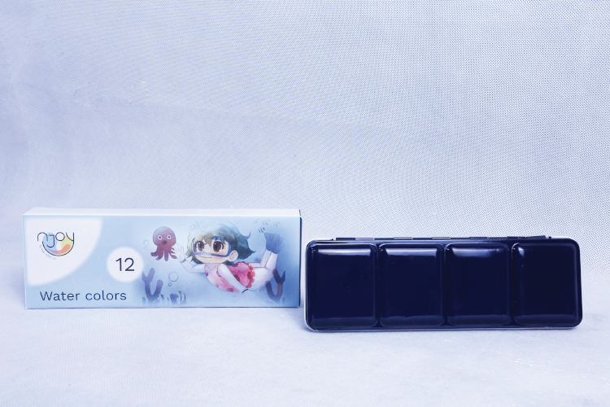

NJOY WATERCOLOR are rated as a student level paint range. They feature brilliant, transparent, and intense colours with high tinting strength. Most colours are rated with the highest degree of lightfastness +++ (100+ years under museum conditions) with a few colours rated just one step below at ++ (25-100 years under museum conditions). Thanks to the purity and uniform viscosity, these water colours are easy to work with and easy to mix. Proudly produced in Vietnam with stringent quality control for a consistent experience with every purchase. This 6-half pan water colour set is packed in a metal tin case. Colours in this general selection set are: permanent yellow deep 433, red 406, viridian hue 410, ultramarine 403, mineral violet 442, burnt umber 445.

NJOY WATERCOLOR MENTAL CASE SET | 12 FULL PANS
NJOY WATERCOLOR are rated as a student level paint range. They feature brilliant, transparent, and intense colours with high tinting strength. Most colours are rated with the highest degree of lightfastness +++ (100+ years under museum conditions) with a few colours rated just one step below at ++ (25-100 years under museum conditions). Thanks to the purity and uniform viscosity, these water colours are easy to work with and easy to mix. Proudly produced in Vietnam with stringent quality control for a consistent experience with every purchase. This 12-half pan water colour set is packed in a metal tin case. Colours in this general selection set are: jaune brilliant 414, permanent yellow deep 405, permanent yellow orange 443, red 406, viridian hue 410, cerulean blue hue 415, ultramarine 403, mineral violet 442, payne’s grey 448, yellow ochre 413, burnt sienna 444, burnt umber 445.
NJOY WATERCOLOR SUPPLIES
About Us
Thời gian gần đây, giới trẻ đang dần quan tâm đến hội họa. Các triển lãm, hoạt động
vẽ tranh... thu hút được rất nhiều sự chú ý. Và một trong những chất liệu vẽ được
quan tâm nhất, là màu nước.
Màu nước tạo độ trong suốt tốt, cho ra những sắc độ màu khác nhau nhưng không
làm mất đi tính nhẹ nhàng, thuần khiết của tác phẩm. Màu nước tạo chiều sâu tốt
nên thường được sử dụng vào các tranh minh họa, bìa sách...
Tuy nhiên, các thương hiệu về màu ở Việt Nam, màu nước lại có rất ít sự lựa chọn.
Chính vì vậy, tập hợp các founder trẻ có cùng niềm đam mê và kiến thức về màu
nước cho ra mắt NJOY vào đầu năm 2023 với mong muốn tạo nên một thương hiệu
màu nước Việt vừa uy tín vừa chất lượng.


.jpg)